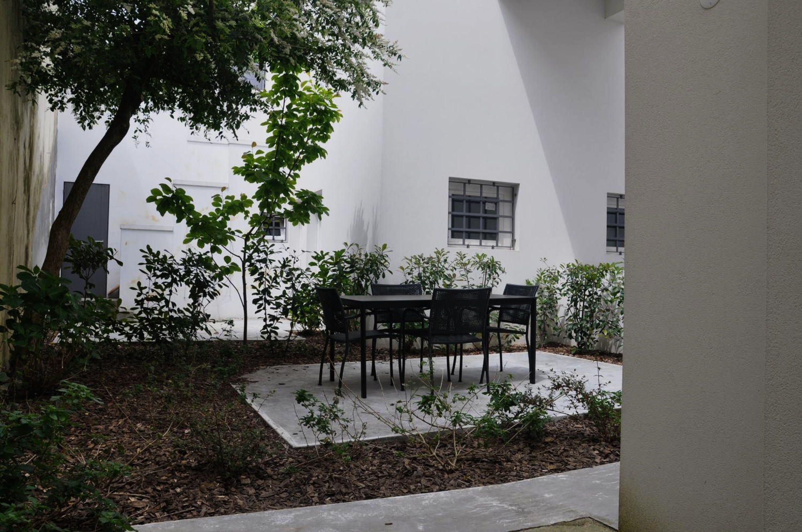
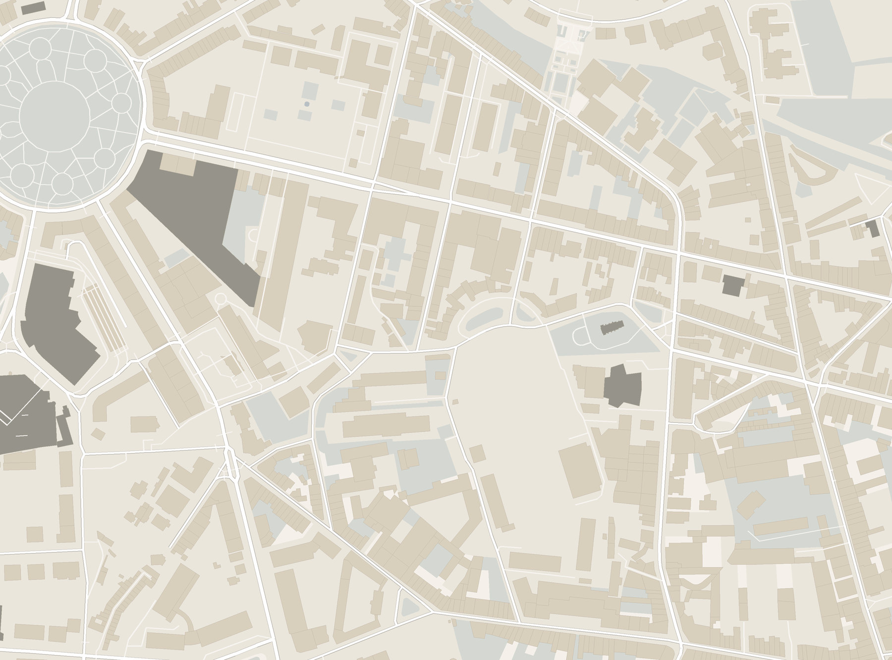

Rés-do-chão · Praça de Pedro Nunes
Pateo114-0
T2 · rés-do-chão com pátio · até 6 pessoas
- 52 m²segundo o Booking
- 2quartos
- 6pessoas
- 1pátio só seu
Um pátiosó seu.
O 114-0 fica no rés-do-chão do prédio Art Déco da Praça de Pedro Nunes e tem um jardim com árvores e mobiliário de exterior, só para quem lá fica.
Lá dentro há dois quartos, cada um com duas camas de solteiro, e uma sala com sofá-cama e televisão, para até seis pessoas. A cozinha abre para a sala de jantar e a casa de banho tem chuveiro.
Tenía además un pequeño patio ajardinado muy agradable también.
Por dentro.
No apartamento
Para uma noite ou para uma semana.
Pátio ajardinado
Com árvores, mesa e cadeiras, só deste apartamento.
Dois quartos
Cada um com duas camas de solteiro.
Sofá-cama na sala
Com televisão por cabo.
Cozinha aberta
Para a sala de jantar.
Wi-Fi
Em todo o apartamento.
Ar condicionado
E aquecimento para o inverno.
Roupa e limpeza
Roupa de cama, toalhas e limpeza semanal.
Animais a pedido
Sem custo extra.
O que está incluído20 coisas que encontra no 114-0 Pateo
No apartamento
- Dois quartos, cada um com duas camas de solteiro
- Sala com sofá-cama e televisão
- Cozinha aberta para a sala de jantar
- Casa de banho com chuveiro
- Wi-Fi e televisão por cabo
- Ar condicionado
- Aquecimento
- Roupa de cama e toalhas
- Limpeza semanal
Lá fora
- Pátio ajardinado com árvores, só deste apartamento
- Mesa e cadeiras de exterior
A pedido
- Limpeza extra
- Troca de roupa de cama e toalhas
- Berço de viagem, grátis
- Estacionamento privado, pago à parte
Bom saber
- Check-in das 16:00 às 23:30
- Check-out até às 11:00
- Não se fuma; não há festas
- Animais a pedido, sem custo
- Taxa turística do Porto paga à chegada
Na Praçade Pedro Nunes.

Avenida da BoavistaRua de Júlio DinisRua da BoavistaRua de Aníbal CunhaRua de CedofeitaRua da TorrinhaRua do Barão de Forrester MCarolina MichaelisIgreja de São Martinho de CedofeitaShopping Center BrasíliaHospital das Forças Armadas - Polo do PortoMercado do Bom SucessoHeróis da Guerra PeninsularLargo da PazLargo Luís Braille 114-0 Pateo 200 mPraça de Pedro Nunes, 114, rés-do-chão4050-466 Porto
- Metro Carolina Michaelis400 m
- Rotunda da Boavista650 m
- Casa da Música900 m
- Jardins do Palácio de Cristal1,4 km
- Torre dos Clérigos1,6 km
- Estação de São Bento1,9 km
- Ribeira2,4 km
- Praias5 a 7 km
Distâncias calculadas pelo Booking. Do aeroporto, o metro (linha E) chega a Carolina Michaelis sem mudar de linha.
Como chegar
Antesde chegar.
- Check-in
- 16:00 – 23:30
- Check-out
- até às 11:00
- Animais
- a pedido, sem custo
- Fumar
- não
- Festas
- não
- Do aeroporto
- metro, linha E, até Carolina Michaelis
Horários e regras do anúncio no Booking, iguais nos sete apartamentos. A taxa turística do Porto paga-se à chegada.

114-0 Pateo 32 fotografias